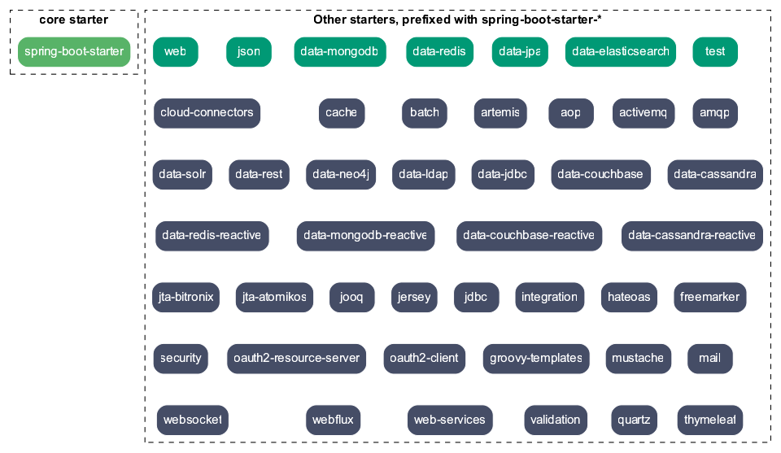

Spring Boot
Table of Contents
1 Spring Boot 命令行
1.1 简介
spring-boot-cli（Spring Boot CLI）是一种快速开发 spring 应用的命令行界面， CLI 利用了 Spring Boot 的起步依赖和自动配置，可以让人们专注于代码本身，而不用完成 繁琐的配置。实际上 Spring Boot 的本质就是用来简化繁琐的 Spring 配置，不过 CLI 的使用真的是让开发 Spring 程序变得非常快速。
CLI 可以检测到代码中使用的类，知道需要给 classpath 中添加的哪些起步依赖才能让 程序运行起来。而且当添加完依赖之后就会完成自动配置，确保启用后 DispatcherServlet 和 Spring MVC，这样就可以响应 HTTP 请求了。所以说想要用 CLI 来 编写一个 Spring 的“HelloWorld” 是非常快速的。
1.2 下载和安装
下载二进制文件，解压到软件目录，并将 bin 目录添加到 PATH 环境变量中
curl -O https://repo.spring.io/release/org/springframework/boot/spring-boot-cli/2.0.5.RELEASE/spring-boot-cli-2.0.5.RELEASE-bin.tar.gz
也可以直接通过网页链接下载，MacOS 可以还可以通过 Homebrow 来安装。
brew tap pivotal/tap brew install springboot
1.3 新建项目 spring init
Spring Boot 提供了一个基于 web 的新建项目工具 start-spring-io 。当然，也可以 通过命令行工具来创建。
# 新建项目 spring init --dependencies=web springapp # 新建项目，同时设置 groupId 和 artifactId spring init --artifactId=demo --groupId=com.avic.mti --dependencies=web,jpa appname spring init -a demo -g io.github.jeanhwea -d=web,data-jpa appname
1.4 列出所有的依赖列表
spring init --list # OUTPUT: # . ____ _ __ _ _ # /\\ / ___'_ __ _ _(_)_ __ __ _ \ \ \ \ # ( ( )\___ | '_ | '_| | '_ \/ _` | \ \ \ \ # \\/ ___)| |_)| | | | | || (_| | ) ) ) ) # ' |____| .__|_| |_|_| |_\__, | / / / / # =========|_|==============|___/=/_/_/_/ # :: Service capabilities :: https://start.spring.io # # Supported dependencies # +---------------+------------------------------------------------------------------+------------------+ # | Id | Description | Required version | # |---------------+------------------------------------------------------------------+------------------| # | activemq | Java Message Service API via Apache ActiveMQ | >=1.4.0.RC1 | # ... # | validation | JSR-303 validation infrastructure (already included with web) | >=1.3.0.RELEASE | # | web | Full-stack web development with Tomcat and Spring MVC | | # | web-services | Contract-first SOAP service development with Spring Web Services | | # +---------------+------------------------------------------------------------------+------------------+ #
1.5 启动项目
启动项目前先修改 DemoApplication.java 文件中，添加一个控制器。
// src/main/java/com/example/springapp/DemoApplication.java package com.example.springapp; import org.springframework.boot.SpringApplication; import org.springframework.boot.autoconfigure.SpringBootApplication; import org.springframework.web.bind.annotation.RestController; import org.springframework.web.bind.annotation.RequestMapping; @SpringBootApplication @RestController public class DemoApplication { public static void main(String[] args) { SpringApplication.run(DemoApplication.class, args); } @RequestMapping("/") public String index() { return "<p>Hello World!</p>"; } }
使用 spring 自带的工具来运行代码
spring run src/main/java/com/example/springapp/DemoApplication.java
使用 maven 工具启动 spring-boot 项目
mvn spring-boot:run # debug 模式运行 mvn spring-boot:run --debug
在浏览器中打开 http://localhost:8080 链接应该可以访问到相应的页面。
1.6 项目打包和运行
这里可以使用 maven 默认的打包命令来生成 jar 包，运行可运行的 jar 文件。
mvn package java -jar target/springapp-0.0.1-SNAPSHOT.jar
2 Spring Boot
2.1 简介
用的初始搭建以及开发过程。该框架使用了特定的方式来进行配置，从而使开发人员不 再需要定义样板化的配置。通过这种方式，Spring Boot 致力于在蓬勃发展的快速应用 开发 Spring Boot 是由 Pivotal 团队提供的全新框架，其设计目的是用来简化新 Spring 应领域成为领导者。Spring Boot 的文档见 HTML ，源代码托管于 GitHub
2.2 创建项目
可以直接通过 Spring Start 网站进行创建，创建一个 Spring Boot 模板工程
curl -s https://start.spring.io/starter.tgz \ -d dependencies=mybatis,web \ -d groupId=io.github.jeanhwea \ -d artifactId=myapp -d name=myapp -d baseDir=myapp \ | tar -xzvf -
2.3 命令行工具
Spring Boot 命令行工具参考 Spring Boot CLI Tool
2.4 编译系统
2.4.1 继承父 Starter
Spring Boot 项目需要继承的父级 Starter，配置如下：
<!-- Inherit defaults from Spring Boot --> <parent> <groupId>org.springframework.boot</groupId> <artifactId>spring-boot-starter-parent</artifactId> <version>2.1.0.RELEASE</version> </parent>
2.4.2 Starters
Starters 是 Spring Boot 对其依赖的再打包，官方的 Starter 都是以
spring-boot-starter 开头，并且存放在 spring-boot-starters 中

spring-boot-starter: Core starter, including auto-configuration support, logging and YAMLspring-boot-starter-activemq: Starter for JMS messaging using Apache ActiveMQspring-boot-starter-amqp: Starter for using Spring AMQP and Rabbit MQspring-boot-starter-aop: Starter for aspect-oriented programming with Spring AOP and AspectJspring-boot-starter-cloud-connectors: Starter for using Spring Cloud Connectors which simplifies connecting to services in cloud platforms like Cloud Foundry and Herokuspring-boot-starter-data-elasticsearch: Starter for using Elasticsearch search and analytics engine and Spring Data Elasticsearchspring-boot-starter-data-jpa: Starter for using Spring Data JPA with Hibernatespring-boot-starter-data-ldap: Starter for using Spring Data LDAPspring-boot-starter-data-mongodb: Starter for using MongoDB document-oriented database and Spring Data MongoDBspring-boot-starter-data-mongodb-reactive: Starter for using MongoDB document-oriented database and Spring Data MongoDB Reactivespring-boot-starter-data-neo4j: Starter for using Neo4j graph database and Spring Data Neo4jspring-boot-starter-data-redis: Starter for using Redis key-value data store with Spring Data Redis and the Lettuce clientspring-boot-starter-data-redis-reactive: Starter for using Redis key-value data store with Spring Data Redis reactive and the Lettuce clientspring-boot-starter-integration: Starter for using Spring Integrationspring-boot-starter-json: Starter for reading and writing jsonspring-boot-starter-oauth2-client: Starter for using Spring Security's OAuth2/OpenID Connect client featuresspring-boot-starter-oauth2-resource-server: Starter for using Spring Security's OAuth2 resource server featuresspring-boot-starter-quartz: Starter for using the Quartz schedulerspring-boot-starter-security: Starter for using Spring Securityspring-boot-starter-test: Starter for testing Spring Boot applications with libraries including JUnit, Hamcrest and Mockitospring-boot-starter-web: Starter for building web, including RESTful, applications using Spring MVC. Uses Tomcat as the default embedded containerspring-boot-starter-web-services: Starter for using Spring Web Servicesspring-boot-starter-webflux: Starter for building WebFlux applications using Spring Framework's Reactive Web supportspring-boot-starter-websocket: Starter for building WebSocket applications using Spring Framework's WebSocket support
2.5 Spring Beans 和依赖注入
Spring Framework 的相关技术在 Spring Boot 工程中都是支持的，常见的标注如下：
@ComponentScan: 查找 Beans@Autowired: 注入的构造器@Component: 组件@Repository: 仓库@Service: 服务@Controller: 控制器
下面是依赖注入的示例
package com.example.service; import org.springframework.beans.factory.annotation.Autowired; import org.springframework.stereotype.Service; @Service public class DatabaseAccountService implements AccountService { private final RiskAssessor riskAssessor; @Autowired public DatabaseAccountService(RiskAssessor riskAssessor) { this.riskAssessor = riskAssessor; } // ... }
@Service public class DatabaseAccountService implements AccountService { private final RiskAssessor riskAssessor; public DatabaseAccountService(RiskAssessor riskAssessor) { this.riskAssessor = riskAssessor; } // ... }
2.6 @SpringBootApplication 标注
Spring Framework 提供了下面的基本标注
@EnableAutoConfiguration: 开启自动配置@ComponentScan: 开启自动扫描组件@Configuration: 允许在上下文中注册其它的 Bean 或导入其它的配置类
@SpringBootApplication 相当于同时开启了上面三项配置
package com.example.myapplication; import org.springframework.boot.SpringApplication; import org.springframework.boot.autoconfigure.SpringBootApplication; @SpringBootApplication // same as @Configuration @EnableAutoConfiguration @ComponentScan public class Application { public static void main(String[] args) { SpringApplication.run(Application.class, args); } }
2.7 外部配置
Spring Boot 允许在 Web 应用中读取外部配置，方便程序在不同的环境下产生不同行为。 常见的有两种配置方式，两种配置方式对比如下：
| Feature | @ConfigurationProperties |
@Value |
|---|---|---|
| Relaxed binding | Yes | No |
| Meta-data support | Yes | No |
| SpEL evaluation | No | Yes |
2.7.1 @Value 方式配置
直接使用注释的方式即可将配置的值读入 Java Bean 中，示例如下：
@Component public class MyBean { @Value("${name}") private String name; // ... }
2.7.2 @ConfigurationProperties 方式配置
该种配置方法比 @Value 更加安全
先定义配置项的 Java Bean
package com.example; import java.net.InetAddress; import java.util.ArrayList; import java.util.Collections; import java.util.List; import org.springframework.boot.context.properties.ConfigurationProperties; @ConfigurationProperties("acme") public class AcmeProperties { private boolean enabled; private InetAddress remoteAddress; private final Security security = new Security(); public boolean isEnabled() { /* ... */ } public void setEnabled(boolean enabled) { /* ... */ } public InetAddress getRemoteAddress() { /* ... */ } public void setRemoteAddress(InetAddress remoteAddress) { /* ... */ } public Security getSecurity() { /* ... */ } public static class Security { private String username; private String password; private List<String> roles = new ArrayList<>(Collections.singleton("USER")); public String getUsername() { /* ... */ } public void setUsername(String username) { /* ... */ } public String getPassword() { /* ... */ } public void setPassword(String password) { /* ... */ } public List<String> getRoles() { /* ... */ } public void setRoles(List<String> roles) { /* ... */ } } }
上述的配置类对应于配置文件中的这些配置项
acme.enabled定义一个值，默认为空acme.remote-address能通过字符串强制转换的类型acme.security.username自带 Security 对象，用户名acme.security.passwordacme.security.roles字符串集合
添加配置项，通过 @EnableConfigurationProperties 标注来扫描配置的 Java Bean
@Configuration @EnableConfigurationProperties(AcmeProperties.class) public class MyConfiguration { // ... }
并且需要添加 @Configuration 到 Java Bean 中
@Component @ConfigurationProperties(prefix="acme") public class AcmeProperties { // ... see the preceding example }
最后就可以将定义的 Java Bean 配置项注入到其它组件中
@Service public class MyService { private final AcmeProperties properties; @Autowired public MyService(AcmeProperties properties) { this.properties = properties; } //... @PostConstruct public void openConnection() { Server server = new Server(this.properties.getRemoteAddress()); // ... } }
2.8 允许跨域
Spring Boot 可以通过添加配置类的方法来启用跨域设置，具体参考下面的代码
import org.springframework.context.annotation.Configuration; import org.springframework.web.servlet.config.annotation.CorsRegistry; import org.springframework.web.servlet.config.annotation.EnableWebMvc; import org.springframework.web.servlet.config.annotation.WebMvcConfigurer; @Configuration @EnableWebMvc public class CorsConfiguration implements WebMvcConfigurer { private static final String[] CORS_METHODS = new String[] {"GET", "OPTIONS", "POST", "PUT", "DELETE"}; private static final String[] CORS_HEADERS = new String[] { "Access-Control-Request-Headers", "Access-Control-Request-Method", "Accept", "Authorization", "Cache-Control", "Content-Type", "DNT", "If-Modified-Since", "Keep-Alive", "Origin", "Referer", "User-Agent", "X-Mx-ReqToken", "X-Requested-With" }; @Override public void addCorsMappings(CorsRegistry registry) { registry .addMapping("/**") .allowedOrigins("*") .allowedMethods(CORS_METHODS) .allowedHeaders(CORS_HEADERS) .exposedHeaders(CORS_HEADERS) .allowCredentials(true) .maxAge(3600); } }
2.9 日志
Spring Boot 提供了一个统一的日志配置，可以兼容 Java Util Logging、Log4J2 和 Logback 等日志系统作为后端。
2.9.1 日志样式
默认的输出样式如下：
2014-03-05 10:57:51.112 INFO 45469 --- [ main] org.apache.catalina.core.StandardEngine : Starting Servlet Engine: Apache Tomcat/7.0.52 2014-03-05 10:57:51.253 INFO 45469 --- [ost-startStop-1] o.a.c.c.C.[Tomcat].[localhost].[/] : Initializing Spring embedded WebApplicationContext 2014-03-05 10:57:51.253 INFO 45469 --- [ost-startStop-1] o.s.web.context.ContextLoader : Root WebApplicationContext: initialization completed in 1358 ms 2014-03-05 10:57:51.698 INFO 45469 --- [ost-startStop-1] o.s.b.c.e.ServletRegistrationBean : Mapping servlet: 'dispatcherServlet' to [/] 2014-03-05 10:57:51.702 INFO 45469 --- [ost-startStop-1] o.s.b.c.embedded.FilterRegistrationBean : Mapping filter: 'hiddenHttpMethodFilter' to: [/*]
包括以下几个部分：
- Date and Time: Millisecond precision and easily sortable
- Log Level: ERROR, WARN, INFO, DEBUG, or TRACE
- Process ID
- A — separator to distinguish the start of actual log messages
- Thread name: Enclosed in square brackets (may be truncated for console output)
- Logger name: This is usually the source class name (often abbreviated)
- The log message
2.9.2 控制台输出
控制台输出默认记录 ERROR, WARN 和 INFO 基本的日志，可以使用 --debug 开启调
试级别的输出。
java -jar myapp.jar --debug
也可以在配置文件 application.yml 中设置 debug=true
如果控制台支持彩色输出，那么还可以配置彩色输出日志
- 开启配置文件中的
spring.output.ansi.enabled选项 - 使用
%clr(%5p)可以根据日志基本来变换颜色。各级别对应的颜色： 红色 (FATAL, ERROR)，黄色（INFO），绿色（INFO, DEBUG） - 设置日期的颜色
%clr(%d{yyyy-MM-dd HH:mm:ss.SSS}){yellow}，默认支持以下几 种色彩： blue cyan faint green magenta red yellow
2.9.3 文件输出
文件输出通过 logging.file 和 logging.path 来控制
| logging.file | logging.path | Example | Description |
|---|---|---|---|
| (none) | (none) | 仅开启控制台输出 | |
| Specific file | (none) | my.log | 输出到文件，文件路径是当前文件夹的相对路径 |
| (none) | Specific directory | /var/log | 输出到文件，文件路径可以是相对路径或绝对路径 |
logging.file.max-size设置文件的最大存储大小logging.file.max-history设置最大的历史文件数量
2.9.4 日志级别
日志级别可以通过 logging.level.<logger-name>=<level> 来设置，
logging.level.root 是设置默认级别
logging.level.root=WARN logging.level.org.springframework.web=DEBUG logging.level.org.hibernate=ERROR
2.9.5 日志分组
日志基本可以通过分组来设置，例如
logging.group.tomcat=org.apache.catalina, org.apache.coyote, org.apache.tomcat
Spring Boot 的默认分组有下面几个：
- web :
org.springframework.core.codec, org.springframework.http, org.springframework.web - sql :
org.springframework.jdbc.core, org.hibernate.SQL
2.10 配置数据库
2.10.1 MySQL
application.yml 配置文件中添加用户名、密码等相关信息
spring: jpa: database-platform: org.hibernate.dialect.MySQL5Dialect datasource: platform: mysql username: username password: password url: jdbc:mysql://localhost:3306/database?useUnicode=true&characterEncoding=utf-8&useSSL=false driver-class-name: com.mysql.jdbc.Driver
pom.xml 文件中添加 MySQL 依赖
<dependency> <groupId>mysql</groupId> <artifactId>mysql-connector-java</artifactId> <version>5.1.47</version> </dependency>
2.10.2 PostgreSQL
application.yml 配置文件中添加用户名、密码等相关信息
spring: jpa: database-platform: org.hibernate.dialect.PostgreSQL9Dialect datasource: platform: postgres username: username password: password url: jdbc:postgresql://localhost:5432/database driver-class-name: org.postgresql.Driver
pom.xml 文件中添加 PostgreSQL 依赖
<dependency> <groupId>org.postgresql</groupId> <artifactId>postgresql</artifactId> <version>42.2.5</version> </dependency>
2.10.3 Oracle
application.yml 配置文件中添加用户名、密码等相关信息
spring: jpa: database-platform: org.hibernate.dialect.Oracle10gDialect datasource: username: username password: password url: jdbc:oracle:thin:@//localhost:1521/database driver-class-name: oracle.jdbc.OracleDriver
pom.xml 文件中添加 PostgreSQL 依赖
<dependency> <groupId>com.oracle</groupId> <artifactId>ojdbc6</artifactId> <version>11.2.0.4.0</version> <scope>provided</scope> </dependency>
Oracle 的驱动是收费的，需要手工安装，默认在 $ORACLE_HOME/jdbc/lib/ 文件夹
中， 安装适配你项目的 jar 文件即可
mvn install:install-file -Dpackaging=jar \ -DgroupId=com.oracle -DartifactId=ojdbc6 -Dversion=11.2.0.4.0 \ -Dfile=<path-to-jar>
2.10.4 Tomcat 连接池配置
如果你在项目中使用 Tomcat 连接池 作为数据库连接，可能还需要设置的相关参数
# Number of ms to wait before throwing an exception if no connection is available. spring.datasource.tomcat.max-wait=10000 # Maximum number of active connections that can be allocated from this pool at the same time. spring.datasource.tomcat.max-active=50 # Validate the connection before borrowing it from the pool. spring.datasource.tomcat.test-on-borrow=true
2.11 开发工具
Spring Boot 的提供了开发工具套件，可以实现自动加载，仅仅需要在 pom.xml 文件
中加入下面依赖即可自动添加
<dependencies> <dependency> <groupId>org.springframework.boot</groupId> <artifactId>spring-boot-devtools</artifactId> <optional>true</optional> </dependency> </dependencies>